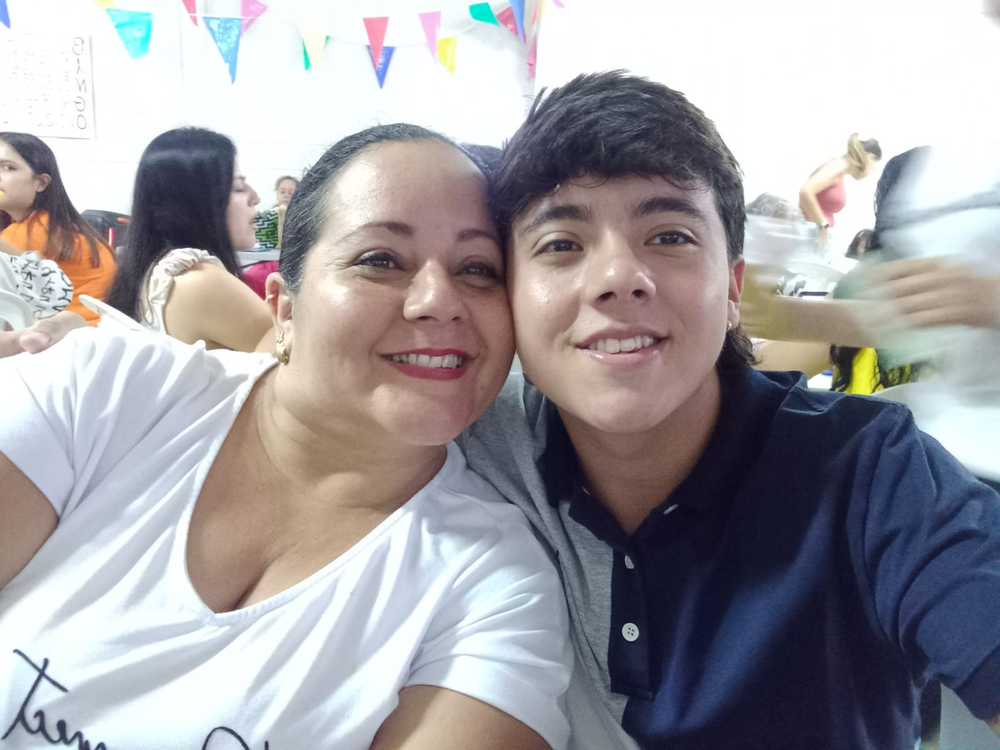
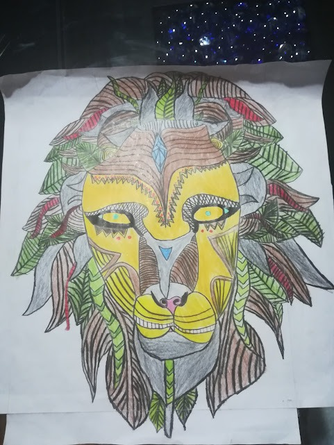
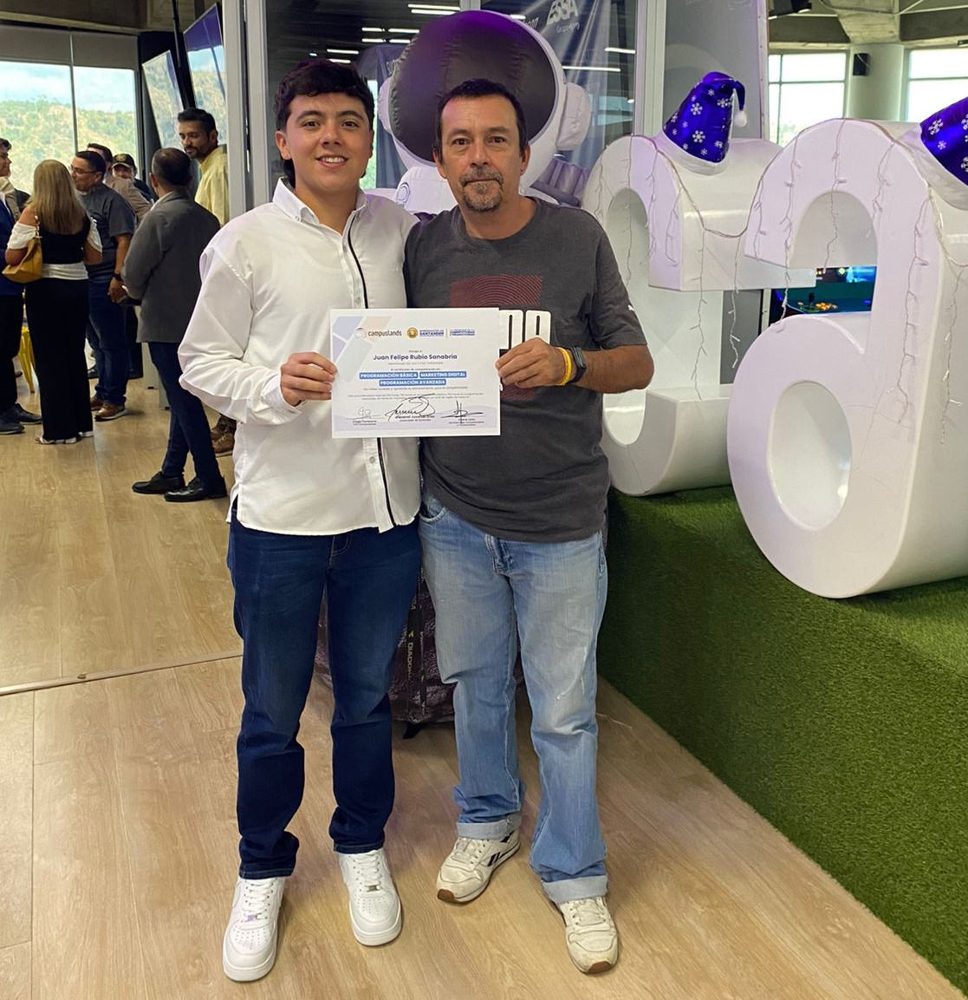
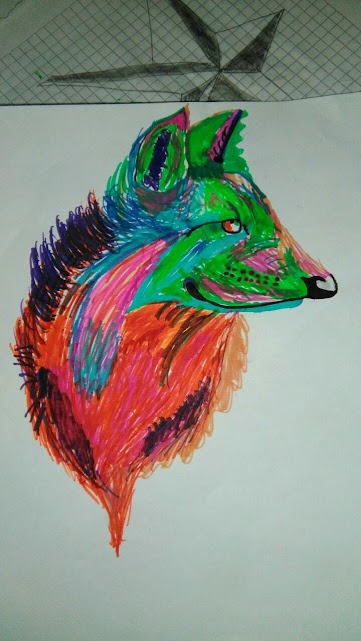
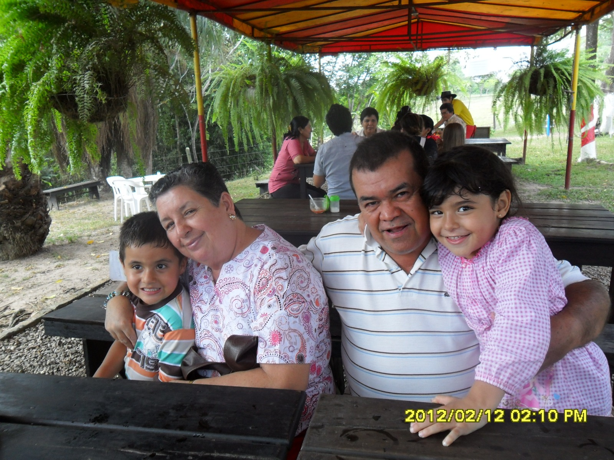

Since childhood, I've enjoyed drawing, exploring styles like realism, anime, and animated characters.
At 17, I began learning English while studying software development, as I realized its importance in the field. Balancing both studies, I eventually discovered Salesforce and took a course to become a Salesforce Administrator. Today, I am both a Salesforce Administrator and a Software Developer.
Beyond technology, I have a passion for fitness. I love exercising, running, going to the gym, and playing table tennis and soccer.





Bucaramanga, Colombia
2023 (After I graduated from high school)
I would've been a Bachelor in International Business